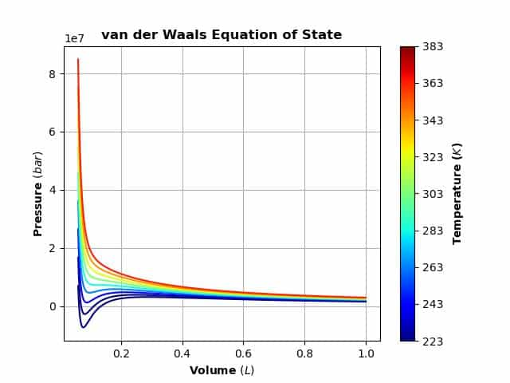
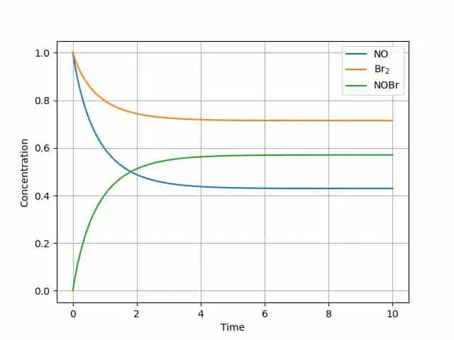

And it’s a good thing! The profession of chemistry has wholeheartedly embraced the python language for a wide range of applications. From balancing multi-component equations to advances in quantum mechanics, chemists have been taking advantage of its utility in numerous aspects of teaching, research and production. Part of this growth is related to the focus on STEM in many areas of our society while another part is the various python-based packages and systems that facilitate its ease of use. This article will take a look at some of these systems that can make life easier for chemists and other scientists. The first of these is SymPy, the fascinating implementation of computer algebra. It has applications in many fields including chemistry, The second is a time saving toolbox created using Sympy and targeted for applications in chemistry. Both are characterized by a focus on equations, applying those equations and the many methods for manipulating those equations.
A companion article provided a first look at Sympy [SymPy: Solving Math Equations in Python and Jupyter - CodeSolid.com] and this one will provide a more focused look into some possible uses of interest to those in chemistry and allied professions. The idea behind SYMPY is that it is possible to explore many aspects of mathematics using symbols that are related to the concept being studied. These symbols are then operated on with well-known techniques to provide not just solutions but also a deeper understanding of the meaning behind the solutions.
Symbolic computation may seem a strange concept at first but it’s really no stranger to chemists as much of the science is based on symbols! Consider these two equations:
y =mx + b
CH4 = C + 4H
Both have meaning in context, and both are symbolic representations of important concepts. I specifically used “=” above to show how this symbol can have different meanings depending upon where and how it is used. In a chemistry sense, “=” can mean ‘is composed of’ or ‘can transformed to be’. Of course, the mathematicians have reserved the “=” for algebra system but Sympy allows us to manipulate both with ease.
Chemistry is full of equations and many are like the equation above in that they represent a change od one or more molecules to a different mix of molecules. A simple example is combustion of methane to carbon dioxide and water:
CH4 + O2 -> CO2 + H2O.
To write this equation properly, the atoms on each side must be identical in quantity [Matter is neither created nor destroyed in a chemical reaction - Antoine Lavoisier]. Thus the fun challenge of balancing equations. This can get rather complicated, but SymPy helps! First, we assign some symbols then explore how to express the chemical equation in ‘SymPy terms’.
#assumes the Sympy package has been installed
import sympy as sp
sp.init_session()
The process using SYMPY is not totally intuitive to a chemist but is exactly correct mathematically. A balanced equation requires that reactants and products must each have the same number of atoms of each type. The actual process is quite easy.
First, we create symbols to represent the coefficients then show Sympy which atoms should be equal. Second, we create equations which denote the numbers of each type of atoms. These equations are set up so that the coefficients add to zero. The coefficient (on carbon for example) will be a negative number if it is a reactant and a positive number if it is a product. The sum of the coefficients is always zero.
sympy.var(['vCH4', 'vO2', 'vCO2', 'vH2O']) #variables which hold the coefficients
atomBalances = [
sympy.Eq(vCH4 + vCO2,0), # Carbon
sympy.Eq(4*vCH4 + 2*vH2O,0), # Hydrogen
sympy.Eq(2*vO2 + +2*vCO2 + vH2O,0) # Oxygen
]
for eqn in atomBalances:
print(eqn)
A final step is necessary because there is an infinite number of exactly correct solutions. The term from linear algebra is the basis vector for the system. We tell SymPy to use -1 on CH4 (methane) because it is a reactant. Once this is available; the set of equations can be easily solved
basis = [sympy.Eq(vCH4,-1)]
#a different basis just multiplies all the coefficients. Same result if a +1 basis is supplied for CO2
#basis = [sympy.Eq(vCO2,1)]
for eqn in atomBalances + basis:
print(eqn)
sympy.solve(atomBalances + basis)
Here is a complicated equation illustrating the need for an approach to add some chemistry knowledge to Sympy.
Ca(OH)2+ H3(PO)4 -> Ca3(PO4)2 + H2O
It is solved in these steps:
atomBalances = [
sympy.Eq(vCaOHOH + 3*vCa3PO4PO4 ,0) , #Calcium
sympy.Eq(2*vCaOHOH + 8*vCa3PO4PO4 +4*vH3PO4 + vH2O , 0), #Oxygen
sympy.Eq(2*vCaOHOH + 2*vH2O + 3*vH3PO4 , 0), #Hydrogen
sympy.Eq(vH3PO4 + 2*vCa3PO4PO4,0 ) #Phosphorus
]
for eqn in atomBalances:
print(eqn)
Some simple variations are fine:
#basis = [sympy.Eq(vCaOHOH,-1)] #correct fractional coefficients
basis = [sympy.Eq(vCaOHOH,-3)] #correct integer coefficients
for eqn in atomBalances + basis:
print(eqn)
sympy.solve(atomBalances + basis)
We will revisit balancing equations in a later section of this post. Following this equation trail we will look into some that you can discuss at the next barbeque. The propane grill makes its appearance and immediately someone asks “What is the pressure in that thing?” To answer let’s study a fairly famous equation. That is the equation for an ideal gas, PV=nRT. Anyone who recognizes this also realizes that 30 minutes after they were introduced to it, they were also taught would be useless in the real world! This annoying condition was corrected over many years by clever chemists introducing many ‘corrections’ to this equation. These corrections were cleverly designed to exasperate generations of chemists and chemical engineers. Of the many, let’s look at the Van Der Waals Equation of state.
#Preliminary symbols, constants and equations
#Note that Sympy can rearrange equations for you via solve
p,V,T=sp.symbols("p,V,T", positive=True, real=True) # variables with optional constraints
R,a,b=sp.symbols("R, a, b", posiptive=True, real=True, constant=True) # constants with optional constraints
ideal_p = n*R*T/V
vdw_eos=R*T/(V-b)-(a/V**2) # Van der Waals Equation Of State
#see how any equation can be rearranged
r1=solve(ideal, p)
r2=solve(vdw_eos, V)
r3=solve (vdw_eos, T)
print(r1, r2)
display(r1, r2)
display(r3)
The capability of SYMPY to rearrange equations as needed is a great help and can be used in any setting through the ‘solve’ function. The van Der Waals equation can be displayed as a graph of Pressure versus Volume and for a given temperature it is called an isotherm. Of interest are the conditions of pressure, volume and temperature that form a liquid state. Propane, butane and liquified natural gas(LNG) represent materials that have been widely studied. A key feature of an isotherm is that the critical pressure, volume and temperature can be found from the equation of state curve. It’s common to use ‘V’ to represent the molar volume (V/n) and these equations will use this substitution.
Instead of guessing from a plot, we can calculate the critical parameters with help from Sympy. We’ll all recall from calculus that a minimum occurs when the first derivative is zero. The critical point is defined where the second derivative is also zero. Instead of reviewing calculus for hours, let Sympy do the work.
dp=diff(vdw_eos,V) #first derivative from the equation above
ddp=diff(vdw_eos,V,2) #second derivative#
display (dp, ddp) #take a look
pressure_eq=Eq(p,vdw_eos) #solve the equation for p
dp_eq=Eq(0,dp) #set the derivatives to zero
ddp_eq=Eq(0,ddp)
display(pressure_eq,dp_eq,ddp_eq) #see what they look like
#the critical point will have three values related to pressure, volume and temperature
#some new symbols for this
pc,Vc,Tc=symbols("p_c, V_c, T_c ")
critpoint,=solve([pressure_eq,dp_eq,ddp_eq],[p,V,T]) #the equation has three roots
pcr,Vcr,Tcr=[critpoint[i] for i in range(len(critpoint))]
display(Eq(pc,pcr), Eq(Vc,Vcr), Eq(Tc,Tcr))
This will provide three equations, one for each variable:
𝑝𝑐=𝑎/27𝑏**2
𝑉𝑐=3𝑏
𝑇𝑐=8𝑎/27𝑅𝑏
Now that we have a solution, let’s see how to provide some numbers. Sympy has several methods in order to convert the symbolic equation into a form which gives a numeric result. One of these allow for substitution into an equation using values for one or more variables. We can specify that the equation include the value 8.314 in place of the constant ‘R’ or other substitutions. A word of warning about units-the actual value for any of the equations of state parameters is highly dependent on the unit system. The literature in this area is not consistent in using the SI system! SYMPY does have provisions to specify units and should be used for critical applications.
vdw_eos.subs (R, 8.314)
vdw_eos.subs (V,100)
vdw_eos.subs ({R: 8.314, V:100})
Another approach is to convert the equation into its numeric form using the lambdify method then calling the new expression with the values of interest.
numeric_pressure=sp.lambdify([R,T, V, a, b], vdw_eos)
print ( numeric_pressure(8.314, 300,100, 4.225 / 1.e6, 0.03707 / 1.e3) )
#prints 24.942009245580326
The above will be a good starting point if you love thermodynamics but won’t easily answer the barbecue question! Wikipedia tells us the answer that the tank is about 10 bar.
In order to properly finish this topic, the sections below will reiterate and illustrate the steps needed to easily simply transform the symbolic equation to one that can deliver numeric results. A nice way to illustrate this will be a colorized graph of the equation with some real-world data.
z=vdw_eos #not strictly necessary as Sympy does not substitute in place
z=vdw_eos.subs ({R: 8.314, a:.36616, b:4.2925e-5 })
display(z) # still contains symbols
press_z=lambdify([T, V], z) #press_z is now a python expression
#data for carbon dioxide
print(press_z (223.15, 6e-5) ) #T=223.15; V=6e-5 ->returns 6943008.947454035
#import what is need to plot
import matplotlib.pyplot as plt
%matplotlib inline
#generate the data array to be plotted
#set the temperature range
T1, T2 = -50, 120 # Start and end temperatures, °C
T_step = 20 # Step size, °C
myT = np.arange(T1+273.15,T2+273.15,T_step)
#set the volume range
V1, V2 = 0.00006, 0.001 # Start and end molar volume, m3
V_step = 0.000001 # Step size, m3
myV = np.arange(V1,V2,V_step)
myP= np.zeros((len(myT),len(myV))) #array to hold the results
#do the calculations
for i in range(0,len(myT)):
for j in range(0,len(myV)):
myP[i,j] = press_z(myT[i], myV[j])
#print(shape (myP) ) # option to see what you have
The code for the plot does not use the Sympy plot function but rather the matplotlib backend. The graphing routine was edited from a nice Medium article: https://medium.com/@pukumarathe/van-der-waals-equation-of-state-in-python-6e3710190fb0.
#now let's plot
c = np.arange(1, len(myT) + 1 )
norm = mpl.colors.Normalize(vmin=c.min(), vmax=c.max())
cmap = mpl.cm.ScalarMappable(norm=norm, cmap=mpl.cm.jet)
cmap.set_array([])
plt.grid()
for i, yi in enumerate(myP):
plt.plot(myV*1000, yi, c = cmap.to_rgba(i))
plt.title("van der Waals Equation of State", weight="bold")
plt.xlabel("Volume $(L)$", weight="bold")
plt.ylabel("Pressure $(bar)$", weight="bold")
#visualize temperature bar
cbar=plt.colorbar(cmap, ticks=c)
cbar.set_ticks(c)
cbar.set_ticklabels(myT)
cbar.ax.set_yticklabels(["{:.0f}".format(i)+" " for i in myT])
cbar.ax.set_ylabel('Temperature ($K$)', weight="bold")
If all goes well, it should look like:

It should be pretty clear that Sympy is a useful tool for many areas in chemistry, Now let’s explore a package that takes advantage of the power of SymPy but adds the ‘language’ of chemistry. A current favorite is Chempy, available as a package or on GitHub. Installation on Macs and Linux is straight forward but for Windows you will need to load each required package by hand. Some required packages related to the Sundials solvers may not load but are not needed for this code.
We’ll assume Chempy has been installed and illustrate some code demonstrating the ‘chemistry awareness of the package. The context is in balancing equations but there is more to it. Of interest is the use of python dictionaries and how one should denote the left-hand side(lhs) and right-hand(rhs) side of the equation to be balanced.
from chempy import balance_stoichiometry
reactants, products = balance_stoichiometry( {'NH4ClO4', 'Al'}, {'Al2O3', 'HCl', 'H2O', 'N2' } )
print(dict(reactants)) #leads to {'Al': 10, 'NH4ClO4': 6}
print(dict(products)) #leads to {'Al2O3': 5, 'H2O': 9, 'HCl': 6, 'N2': 3}
from chempy import mass_fractions
for fractions in map(mass_fractions, [reactants, products]):
print({k: '{0:.3g} wt%'.format(v*100) for k, v in fractions.items()})
# the result is {'Al': '27.7 wt%', 'NH4ClO4': '72.3 wt%'}
# {'Al2O3': '52.3 wt%', 'H2O': '16.6 wt%', 'HCl': '22.4 wt%', 'N2': '8.62 wt%'}
Here is the earlier equation from the pure Sympy section:
# CH4 + O2 --> CO2 + H2O #SymPy answer was:{𝑣𝐶𝐻4:−1, 𝑣𝐶𝑂2:1, 𝑣𝐻2𝑂:2, 𝑣𝑂2:−2}
reactants, products = balance_stoichiometry( {'CH4', 'O2'}, {'CO2', 'H2O' } )
print(dict(reactants))
print(dict(products))
#the answer is:
{'CH4': 1, 'O2': 2}
{'CO2': 1, 'H2O': 2}
#a tougher one
#sympy.var(['vCaOHOH', 'vH3PO4', 'vCa3PO4PO4', 'vH2O'])
reactants, products = balance_stoichiometry( {'Ca(OH)2', 'H3(PO4)'}, {'Ca3(PO4)2', 'H2O' } )
print(dict(reactants))
print(dict(products))
#the answer is:
#{'Ca(OH)2': 3, 'H3(PO4)': 2}
#{'Ca3(PO4)2': 1, 'H2O': 6}
#SymPy answer was {𝑣𝐶𝑎3𝑃𝑂4𝑃𝑂4:1, 𝑣𝐶𝑎𝑂𝐻𝑂𝐻:−3, 𝑣𝐻2𝑂:6, 𝑣𝐻3𝑃𝑂4:−2}
This was a lot simpler, and the result is clear about reactants and products!
The next section will cover how Chempy can help with generation of kinetic models for reaction simulation. This is a very active area of investigation in chemistry and adequate kinetic models are critical to understand many import processes. Chempy is able to interpret common chemical notation and convert it to the proper math equations to be used in a solver for the differential equations. The example reaction is that of molecular bromine and nitrous oxide to synthesize nitrosyl bromide. In a closed system, this is actually an equilibrium reaction. Chempy sorts it out!
Chempy has a nice feature where we can use some standard notation to indicate a reaction. This string representation of a reaction is processed into first a set of chemical equations then these are converted to a series of equations and parameters for eventual use by the Chempy ODE solver. I would suggest starting a new notebook to handle the necessary imports.
from collections import defaultdict
import matplotlib.pyplot as plt
from chempy import Reaction, Substance, ReactionSystem
from chempy.kinetics.ode import get_odesys
import sympy
sympy.init_printing()
%matplotlib inline
#now for the reaction
from chempy import balance_stoichiometry
reactants, products = balance_stoichiometry( {'NO', 'Br2'}, {'NOBr'} )
print(dict(reactants)) #printing is for understanding the system
print(dict(products))
A, B, C = map(Substance, 'ABC') #map some symbols to our equation
# how Chempy sets up the equation:
str_massaction = """
2 A + B ->2 C ; 'k1'
2 C -> 2 A + B; 'k2'
"""
#the spaces are required!
#Set up the reaction system
rsys = ReactionSystem.from_string(str_massaction, substance_factory=lambda formula: Substance(formula))
Display (rsys.substance_names() )
#want a peek inside; use "ReactionSystem?" inside of a notebook cell for details
odesys, extra= get_odesys(rsys, include_params=False, lower_bounds=[0, 0, 0])
display(odesys.exprs, odesys.params, odesys.names, odesys.param_names ) # needed to integrate the ode
#do the work getting time,concentration values initial rate constants
t_max= 10
A0=1.0 #used to create the very logical dictionary below
B0=1.0
C0=0.0
tout, yout, info = odesys.integrate(
t_max, {'A': A0, 'B': B0, 'C': C0},
{'k1': 0.42, 'k2': 0.17 },
integrator='cvode', nsteps=3000)
#What does it look like?
plt.plot(tout, yout)
plt.grid()
plt.legend(['NO', 'Br$_2$', 'NOBr'])

The graph illustrates the equilibrium reaction-each of the components reaches a steady state.
This can serve as a great start to model any number of reaction steps in a mechanism. An interesting aspect is that Chempy has included programming for a more detailed engineering models such as a Continuous Stirred Tank Reactor (CSTR) [cstr, extra2 = get_odesys(new_rsys, include_params=False, cstr=True)]. The user just needs to add the chemistry part to simulate a commercial reactor.
There are parts of Chempy that deal with various complicated equilibria in solution, reaction kinetics with appropriate SI units, fitting data to the calculated values and the energetics of protein folding. And there’s more! The examples included with Chempy demonstrate how to perform various calculations in an interactive mode. It is truly an amazing package for any chemist.
These short notes barely do justice to the capability of Sympy and the utility of Chempy. The equation solving, the differential equations and the thermodynamics are only small number of the tools that have been developed to enrich the learning and practice of chemistry. This area is under constant development there is no obvious limit to its implementation throughout the various fields of chemistry.